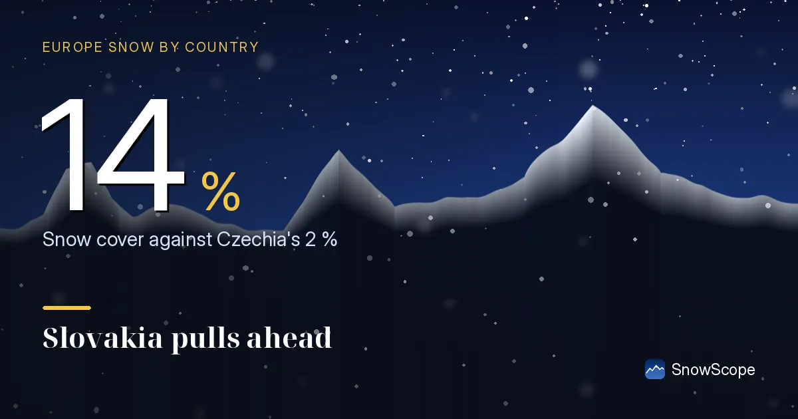
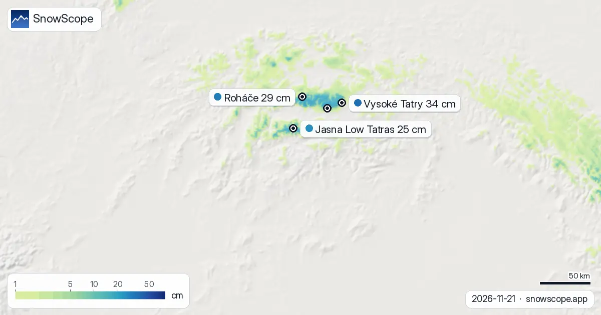

Slovakia pulls ahead: 14 % snow cover against Czechia's 2 %
Slovakia's mountains are storing much more water as snow than Czechia's this week. Fresh snow in the past three days has pushed Slovakia's white cover to 14 %, while Czechia lags at just 2 %.
See the live snow forecast for Vysoké Tatry in the SnowScope appSnow depth, powder alerts and the 3D map, free.
Slovakia's snow advantage grows
The gap between Slovakia and its northern neighbour has widened sharply. Slovakia now has snow across 2,680 km² of its modelled ski terrain, with 17 cm of new snow recorded in the past 72 hours across a 970 km² area. Czechia, by contrast, sits at only 2 % white cover and shows no comparable fresh-snow event. This matters for water storage: snow that falls early in the season recharges mountain reservoirs and groundwater reserves through winter and spring melt.
The difference reflects how mountain height shapes precipitation. Slovakia's peaks rise higher and catch more moisture. Czechia's ski areas cluster in lower ranges where rain still dominates over snow at this time of year.
| Country | White | Deepest resort | Next 7 days |
|---|---|---|---|
| Slovakia | 14 % | Vysoké Tatry | 11 cm |
| Poland | 11 % | Kasprowy Wierch | 14 cm |
| Czechia | 2 % | Ramzová | 10 cm |

Neighbours diverging
Across the border in Poland, snow cover stands at 11 %, positioned between the two. Poland's leader, Kasprowy Wierch, holds 36 cm of snow depth and may see 14 cm more in the next seven days. Ramzová, Czechia's deepest point, has only 13 cm and faces a slower outlook of 10 cm over the same period.
These differences reflect both geography and the timing of recent weather systems. Slovakia caught the most recent pulse of moisture; Czechia's lower terrain and milder air masses have kept snow sparse.

Mountain bands: snow begins above 1,000 m in Slovakia
In Slovakia, the snow line sits at 1,000 m. Below that height, only 4 % of terrain is white and the average depth is zero. Between 1,000 m and 1,500 m, coverage jumps to 68 % with an average of 3 cm—enough to hold water but thin enough that rocks may show through. Above 1,500 m, complete snow cover begins: 100 % of terrain is white, with 19 cm average in the 1,500–2,000 m band and 30 cm in the 2,000–2,500 m band.
For a hydrologist, this layering is crucial. The deepest snow sits where it will linger longest and melt slowest, feeding streams into late spring. Early-season snow at mid-elevations (1,000–1,500 m) is more vulnerable to rain-on-snow events and faster melt.
Resorts: Vysoké Tatry leads the charge
Among Slovakia's major ski areas, Vysoké Tatry in the High Tatras holds the most snow: 34 cm depth after receiving 18 cm of fresh snow in three days. The High Tatras as a whole recorded 24 cm of new snow, the heaviest total in the country. Štrbské Pleso, also in the High Tatras, sits at 22 cm depth with 21 cm of new snow—the greatest three-day accumulation at any resort tracked.
Roháče and Jasna Low Tatras show 29 cm and 25 cm respectively. Vrátna, the shallowest of the five, still holds 19 cm and received 20 cm of fresh snow. All five areas lie above 1,400 m, so they remain in the zone of reliable snow cover even after melt events.
What's ahead: more snow, then a drier spell
Over the next three days, Slovakia will see a maximum of 9 cm of new snow, with 5 cm most likely on 23 November. That day marks the snowiest of the coming week. By contrast, the week after (29 November to 5 December) looks drier: only 6 cm is forecast, suggesting a brief dry window before winter resumes.
For water accounting, this matters. The coming 9 cm will add to the reservoir; the drier week that follows gives early snow a chance to consolidate and settle.
Trend: a week of volatility before stabilisation
Over the past six days, Slovakia's snow-covered area has swung between 1,660 km² and 2,680 km² as melt and new snow have competed. The pattern shows early-season instability: not all fresh snow sticks, and fluctuations are sharp. Today's 2,680 km² represents a recovery and growth. As temperatures drop and the snowpack thickens through December, these wild swings should ease. The fact that Vysoké Tatry now leads the national standing (after Ski centrum Dedinky held the top spot earlier in the week) underscores how the terrain above 2,000 m is becoming the reliable water store.
Tips for skiers
- Stay above 1,500 m for the best preserved early-season snow. Below that height, coverage is patchy and melt is faster.
- Watch for rain-on-snow risk in the 1,000–1,500 m band if temperatures rise above freezing between now and 23 November.
- Vysoké Tatry and Štrbské Pleso have the thickest, most recent snow. Check the official avalanche bulletin before entering steep terrain off-piste.
- Expect the dry spell after 23 November to stabilise the snowpack; conditions are likely to improve as consolidation occurs.
- Use the SnowScope map to track snow depth in real time at your chosen elevation and slope aspect.
About these numbers
Resort snow depths are the deepest snow on the resort's upper slopes from the SnowScope snow model (about 1 km, run of 21 November); they are estimates for an area, not a measurement at one point. Station values are measurements on the date shown. Forecasts can change. Always read the official avalanche bulletin before going off-piste.
Cite this report
For research, teaching or the press: the numbers and charts are free to reuse under CC BY 4.0 with this citation.
SnowScope (2026), Slovakia pulls ahead: 14 % snow cover against Czechia's 2 %, https://snowscope.app/blog/en/2026/11/slovakia-snow-vs-neighbours-21-november-2026.html, accessed 2026-11-21
SnowScope (Atlas Labs). (2026, November 21). Slovakia pulls ahead: 14 % snow cover against Czechia's 2 %. SnowScope snow reports. https://snowscope.app/blog/en/2026/11/slovakia-snow-vs-neighbours-21-november-2026.html
BibTeX
@misc{snowscope2026slovakiasnowvsneighbours,
author = {{SnowScope (Atlas Labs)}},
title = {Slovakia pulls ahead: 14 % snow cover against Czechia's 2 %},
year = {2026},
month = nov,
howpublished = {\url{https://snowscope.app/blog/en/2026/11/slovakia-snow-vs-neighbours-21-november-2026.html}},
note = {Published 2026-11-21 13:39 UTC; accessed 2026-11-21}
}· CC BY 4.0 · Methods, data and tools →
Vysoké Tatry: snow and temperature by height, this winter vs last (tools) →
Follow Vysoké Tatry
Free: a message when fresh snow is coming, and the forecast every morning.
More snow reports

Tornik on Zlatibor had up to 39 cm on its upper slopes on 15 November 2026; by Wednesday it had melted. Kopaonik barely turned white. The week day by day and what comes next.

Savin Kuk above Žabljak picked up 22 cm of snow from 13 to 19 November and still has 6 cm today. Kolašin 1450 and 1600 are bare. The week day by day, and the next chances.
Pick a region, dates, budget and what matters; get every resort ranked with the likely snow at the start, the pass, hotel and food per person, chalets to book, and a game mode.